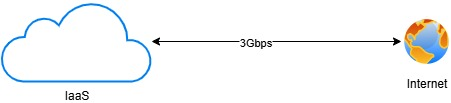

Internet dedicado:
Opción 2: enlace dedicado de 3 Gbps sobre internet.
Si el enlace de 3 Gbps será provisto mediante un enlace dedicado sobre Internet, dicha conexión será suficiente para la conectividad con los usuarios finales.
En cualquiera de los casos, la solución debe cumplir con los Acuerdos de Nivel de Servicio (SLA) mínimos definidos, en cuanto a capacidad, disponibilidad, latencia y pérdida de paquetes.

- Acceso de los usuarios a la plataforma/servicio:
Los usuarios accederán a la plataforma a través de internet mediante una dirección IP pública.
En caso de que el proveedor opte por suministrar el enlace de descarga de datos Sentinel mediante una conexión a Internet (y no a través del nodo de RedCLARA), se considerará suficiente siempre que dicho enlace cumpla con una capacidad de al menos 3 Gbps simétricos (entrada y salida), garantizando no solo la ingesta de datos sino también el acceso concurrente de los usuarios a la plataforma.
En caso de establecer la conectividad mediante RedCLARA, deberá garantizarse adicionalmente una salida a Internet de al menos 1 Gbps para el acceso de los usuarios finales a la plataforma.